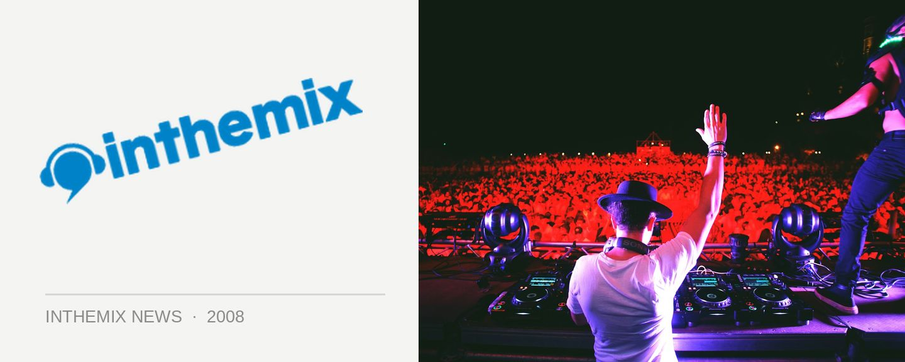

Drum[&]Breaks takes over the main room
For fans of the upbeat and mixed-up vibe that the Drum[&]Breaks crew have been bringing to The Burdekin once a month, there’s a bit of a change in store for this weekend’s gig. Due to technical issues relating to renovations, the party will not be on the usual levels 1 and 2 of The Burdekin. Not to worry however, because for the first time ever for a ticketed event, the event will be hosted on the ground floor.
Breaks will be up first and then followed by the drum n’ bass,and to add to the uniqueness of the occasion, the Burdekin will be bringing in additional lighting, smoke machines, lasers as well as superior sound! On rthe breakbeat side of things, DJs will include Moniker, Kemuri, Dirty D and JBY while Typhonic, Shuey and i-dub while be privinding the tunes with the sped up tempo.
Drum[&]Breaks takes over the mainroom of The Burdekin this Saturday 28th July.